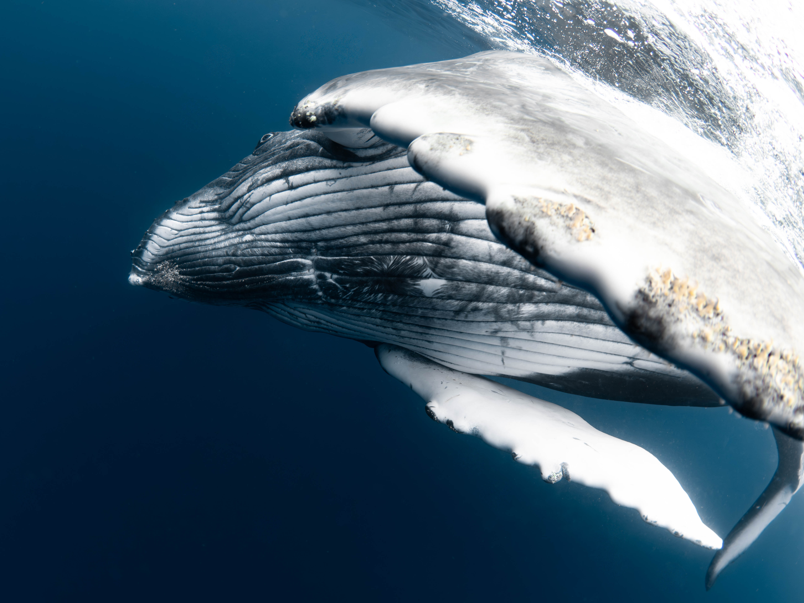

PROFILE
大阪出身 | 沖縄在住
大学時代にダイビングと出会い、水中世界を撮り始める。
何気ない海の日常や魚たちがふとした瞬間に見せる豊かな表情を
切り撮ることに魅了され、卒業と同時に「海のある暮らし」を
求めて沖縄に移住。現在は沖縄の海をフィールドに、
「まだ見ぬ世界」を追い求めながら撮影を続けている。
Born in Osaka, now based in Okinawa.
I first discovered the wonders of the underwater world
through diving during my university years.
Captivated by the serene beauty of daily life beneath
the waves and the expressive, fleeting moments of marine life,
I moved to Okinawa immediately after graduation
in search of a "life by the sea."
Now, Okinawa’s waters are my primary field,
where I continue to capture unseen worlds
and the hidden stories of the ocean.
GEAR
- Camera: OLYMPUS OMD EM-1 MarkⅡ
- Lens: m.zuiko 8mm f1.8 fisheye pro
- Lens: m.zuiko 60mm f2.8 macro
- Housing: OM SYSTEM PT-EP14
- Strobe: Inon Z330
CAREER
2025年4月 東京 池袋で若手20代のダイバー7名で
水中写真展 7 BLUE を開催
April 2025 Held an underwater photo exhibition "7 BLUE" in Ikebukuro, Tokyo with 7 young divers in their 20s
Oceanα記事「若手フォトダイバー7名による写真展「7 BLUE」開催！“心を奪われた瞬間” を切り取る」2025年4月 東京 Dive Family Yellow 主催の写真展に
作品を展示
April 2025 Showed works at a photo exhibition hosted by Dive Family Yellow in Tokyo
Oceanα記事「静岡県伊東の海を“愛おしく”想い、ダイバーたちがシャッターを切る景色とは？「いとうしぃ」水中写真展開催！」




CONTACT
問い合わせは下記連絡先から受け付けております。
For requests, please contact us using the information below.
- Name: 坪田和眞 KAZUMA TSUBOTA
- Mail: t070xkazu14257@gmail.com
- Instagram: _kazu.uwpic_